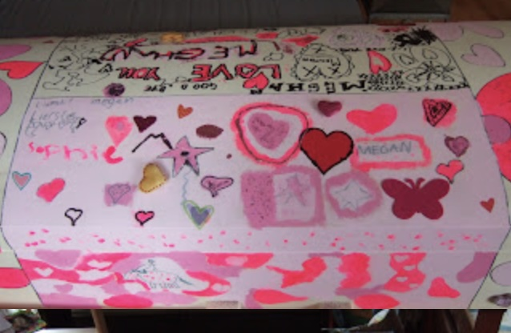

Suffused with Love
25 Oct 2007
Tonight we move our daughter to her casket in preparation for tomorrow’s cremation. The casket was handmade with great care by a craftsman in Utrecht, who wrote in response to our e-mail:
I want to wish you strength in dealing with the loss of Meghan. I can assure you that the casket was indeed made with a great deal of love and care. And I am honored that you’ve chosen this casket for something so important.
Yesterday and today we painted the casket to really make it hers.

Another Step to Goodbye
7 Nov 2007
Sunday’s memorial gathering was just as we’d hoped it would be. It was more like a reception than a service; everyone had appetizers and drinks and moved among the crowd, talking to each other and to us. Many shared a written memory of Meghan to add to our remembrance book. Halfway through we paused for two minutes of silence.
We played the CD we made of songs my daughter loved to hear. A slide show ran on endless loop in one corner, fifty photos from baby to the last Spain trip. It was therapeutic for me making the CD and slide show. I ended it with this song snippet:
In my dreams I'll always see you soar above the sky
In my heart there'll always be a place for you
For all my life I'll keep a part of you with me
And everywhere I am, there you'll be.
--Faith Hill, There You'll BeTwo hours were not enough; the last of us trickled out just over three hours later. As people left, they took a packet of flower bulbs to plant and remember Meghan by as they bloom in the spring. We found this chinese proverb, which was perfect for the cover sheet:
Flowers leave some of their scent behind in the hand that tends them.

And so we move on, another moment of closure complete. I’m awed by the net of friendship around us, immensely large and spread around the world. So many people are living through this with us. Thank you all.
One Month
21 Nov 2007
It’s been exactly a month since my daughter died. The days her body stayed home, the painted casket, the cremation, the memorial service, even the simple passing of time: all have brought tiny bits of closure. I’m feeling remarkably, surprisingly good. Life flows on. Dinners get made, visits get planned, school reports are discussed, holidays approach, the baby inside me grows. My daughter’s death has found its niche inside the flow, no longer filling every moment but occasionally rattling for attention on its shelf—and so far supremely dust-free.
And yet it all fades. I’ve relived her last 24 hours so many times, her last breaths. I don’t ever want to forget it, how it was being there, what I felt, the sound and smell and feel of her. But already, just over 4 weeks later, the colors have begun to dim. I suppose if I forget things, I won’t know it to regret it, but I hope the memories stay vibrant.
Two Months
21 Dec 2007
There’s a winter wonderland outside; no snow on the ground, but little flakes coming down all day, and we woke to whitewashed icy tree branches. Truly beautiful.
Things are good. My husband and I still have monthly talks with the psychologist at the hospital to prevent things taking a nosedive. I still have occasional days where I cry inconsolably and wonder how all this could have happened. The wound feels more sore, not less, but I’m told that’s right on target.
I filled out next year’s calendar and didn’t know what to do when I got to my daughter’s birthday. She won’t be turning 17. I left the date unmarked. Later I went back and added “Meghan 17” and, on October 21, “Meghan †.”
On November 25 I sat beside a father and his two daughters in the train back from Amsterdam. They’d been visiting friends from England and the girls had gotten many little gifts. After we’d chatted a while, the youngest, probably 8 or so, pulled out a cheery pair of gloves with little girl faces and hair knitted onto each finger. Her dad suggested, “You should wear them to school tomorrow.” The girl frowned, unsure whether her friends might find them childish. I said, “I have a girl about your age at home who’d love to have those gloves and definitely wouldn’t find them childish.” The father asked me, “Oh, so you have daughters too?” I didn’t know what to say.
I was prepared for “Oh, so you have kids too?” and “Oh, so you have a daughter too?” and “Oh, how old is your daughter?” But not “daughters.” I paused nearly a full minute, and then I just explained it. Said I was sorry to suddenly dump all that in his lap, but it was still fresh and apparently I hadn’t yet figured out what to say when these things came up.
My husband and I have talked about that, what to say when these things come up. How many kids do we have when people ask? I’ve decided I have 4 (including the one in utero), whether I’m speaking with transient strangers or budding friends. To say anything else will make me feel like I’m omitting something, and at least now, glossing over her life and death for the sake of others’ possible comfort will be doing myself a disservice.
Three Months
21 Jan 2008
My eldest died three months ago today. My youngest is slated to be born just about three months from now. Our living offspring will again tally three. Not that it means anything; I just noticed it. Which reminds me of the Star Trek: Next Generation episode when the crew get caught in a time loop and Data programs in the number three to help him remember the way out in the next iteration.
A year ago today she was 9 days out of the hospital, after 6.5 grueling weeks of radiation and chemotherapy. She came out on January 12 weak, still vomiting, on IV fluids, and at her lowest weight ever. By the 21st she was, thankfully, just over the hump and on the upswing. It would be another six weeks before her first post-treatment MRI. But she was entering what would be 8 good months. Treatment bought her that, at least.
I can’t say anything’s really changed since a month ago. The breathless moments, when I really get that she’s dead, seem to be no more and no less frequent. I still have moments where I feel vaguely guilty that we get to go on with our lives, get to eat breakfast, look forward to a movie, enjoy a warm day, and she doesn’t. And the 21st is just a crappy day, however illogical I think that is. It’s just a number. But I’ve been in a bad mood all day and finally figured out why, when I burst into tears after dinner.
There are leftover strands to tie off; they hang over my head, weighing more on some days than on others. Her things are still boxed in the attic; I need to go through them. We’re still in a song-and-dance trio with the insurance company and the hospital over the bill. Her ashes still need to be picked up; I’ve not heard back from the crematorium after I sent the letter they requested, asking them to mail half to the US. I should call, but every day I have something “more pressing,” decide I’ll do it in half an hour, after lunch, after I pick the kids up; and then it’s evening.
Pictures
6 Feb 2008
I wasn’t ready to post these three months ago, but now, reading other people’s blogs and seeing how much I appreciate their sharing such an intimate moment, I am.
And this is how she was the summer before all this started:
Seven Months
21 May 2008
The enormity of what happened takes my breath away. Literally. Sometimes I cannot breathe, thinking about the daughter that was, the baby so full of life, the shy young girl terrified to speak up in class, the older girl with such a forceful, even destructive, lust for living; and then the frightened girl in a hospital bed, sick beyond relief from drugs and radiation, and later the passive, paralyzed, bald girl who seemed to have made peace with this turn in her life. Those months were good ones, healing for me, and I hope for her, after years of difficulty. But after them came the weeks of rapid decline, the confused girl, childlike, worn out, increasingly unable to understand or, eventually, make herself understood, who dribbled when she drank and didn’t know when she had to pee. Now I see my youngest child making the strides forward that every baby makes, and I think of my firstborn, who made those same strides forward sixteen years ago, and then in reverse sixteen years later.
I suppose it’s normal, seven months after her death, to still feel the wound so deeply. This kind of thing is unnatural, is not supposed to happen; just the thought of a sixteen year old—any sixteen year old—dying causes us all to shake our heads in sorrow. And this was my child. Yet when she died it was also welcome. We knew it was coming, and her year of struggle, extreme suffering, and then heart-wrenching decline made her death a relief. Though I knew to be prepared for the feelings I’m having, I thought with the optimistic naïvete of the uninitiated that I’d dealt with her death already, that knowing it was coming and living through her illness so intimately had prepared me. That the worst of the blow had already been processed.
But it stays with me, its power to make me burst into tears undiminished. It hits me when I hear certain songs, see certain photographs, watch our new son reach baby milestones. Sometimes it hits me without any trigger at all. It feels like it felt when, running to jump my grandmother’s ditch, I fell flat, hard, and the wind was knocked completely out of me.
I hope the pain will fade as the years pass, but then I’m terrified that means I won’t remember the details anymore.
Ladybug, ladybug
4 Jun 2008
This year we have an abundance of ladybugs in the yard, so many I find them by the fives and tens without searching on every plant I touch. Red ones with black spots, black ones with red spots, and scads of armadillo-like larvae. I’m happy about this, as they eat the aphids on the rosebushes. As of this morning, I’m also moved to tears by it. Because in an e-mail conversation about something else, my daughter’s stepmother commented that Meghan chose the ladybug as her sign to let them know she was around.
9/11
11 Sep 2008
For thousands, this was a day of mourning in 2001. For me, ten years earlier, it was a day of incredible joy. It was the day I first became a mother, the day I completed a rite of passage I had both feared and anticipated, the day I welcomed my firstborn to the world and marveled over her tiny perfect body as she nursed.
Today, nearly a year after her death, we celebrated her entrance into the world seventeen years ago by making fuse bead creations and playing 10,000 as we ate jellybeans and listened to her favorite music. We dined on steak and salad followed by ice cream. I think she’d be pleased with our activities.
In the days leading up to her birthday, I thought about her more and more often. Yesterday, the day labor began seventeen years ago, and today I thought about her constantly. Now I lost the mucus plug. Now we went out to lunch. Now contractions were so strong we drove to the hospital. Now I peed all over the nurse and doctor with my first push. And more times than I can count, I thanked the universe that I didn’t know then all that would later come to pass.
I meant to celebrate her life today, but I couldn’t fend off a deep sense of mourning. I remember so clearly how overjoyed I was with her, how happy to be a mother, how much I had looked forward to meeting her. She was as perfect a baby as any other, as perfect as our new son, and I think his presence brings her babyhood back into focus at moments like these. I mourn the beautiful little life that was born that day, now gone for good.
A Year Tomorrow
20 Oct 2008
I’ve been dragging my feet toward this day for weeks. As it nears, I spend more and more time reliving the same days a year ago. On one hand, that’s good; therapeutic, appropriate, and it reassures me that I haven’t forgotten. On the other hand—well, I’m sure it’s as obvious as a magenta cow in a snowy field. It sucks. Sucks like the mother of all Hoovers.
After lots of not wanting to think about it, turned into thinking about it for seconds at a time, turned into audible discussions, I’ve decided we’ll commemorate her death by lighting a candle all day and observing two minutes of silence at dinner (by which time the baby should be asleep). I can’t bear to do more, but I’ll regret doing nothing.
Strangely enough, I’m afraid it will get harder as the years go by. She wouldn’t be that different now if she had lived; in ten years, we’ll be commemorating someone she would no longer be. It feels like holding her back, which I know is silly. And it’s all we have, so we’ll make do with it.
Two Years
21 Oct 2009
It’s been two years. Two years. How is that possible? It seems so much shorter.
There are still tears. Still moments of disbelief. I’m beginning to realize you really don’t ever get over it. It doesn’t fully abate; there is a limit to how far the pain recedes. Once vivid crimson, the gash fades to tea rose, but the scar remains. You just learn to live with it. It becomes another steady, familiar thread in the warp and weft of your life.
(This is the end of the journal.)